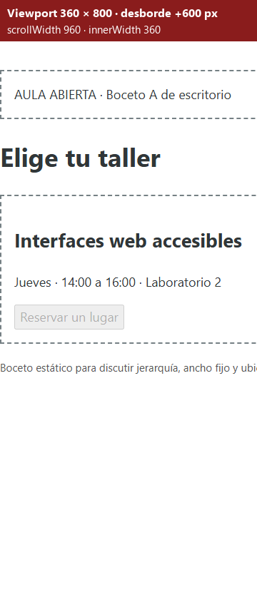
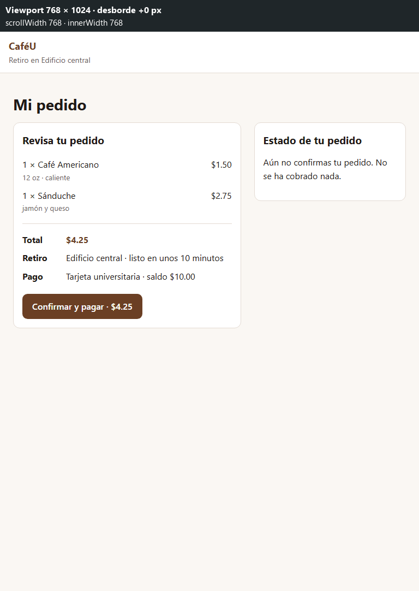
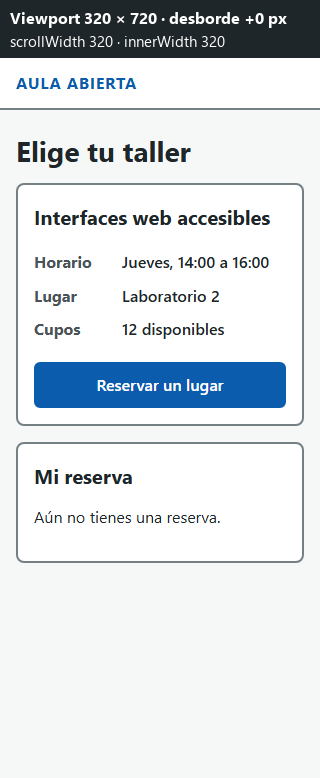
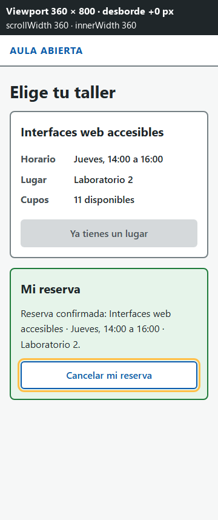
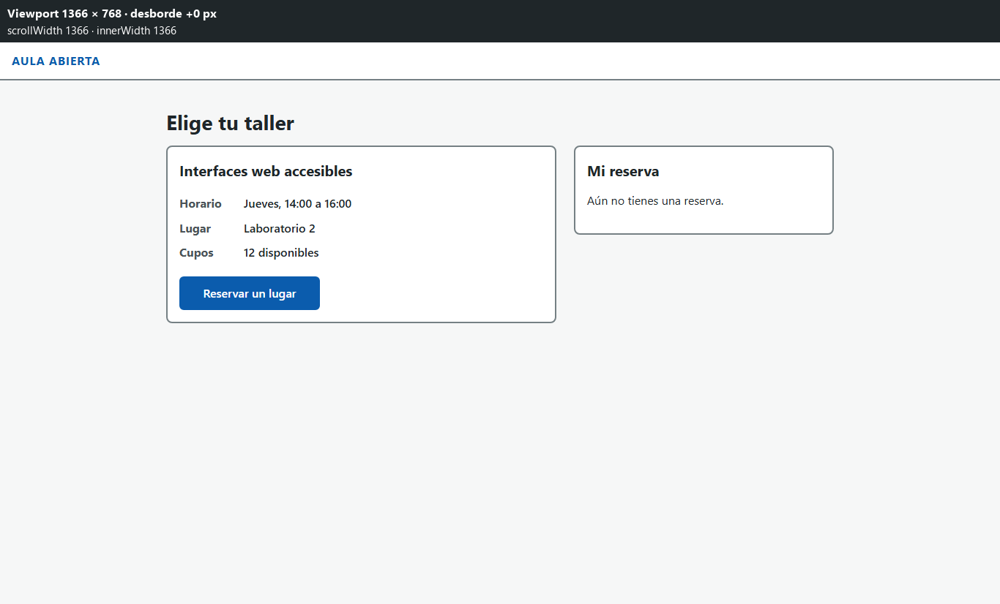

¿El estudiante sabe si ya pagó su pedido?
Hipótesis: en un viewport de 360 px, un estudiante que no conoce la pantalla confirma su pedido de CaféU y dice su número de pedido y si ya pagó, sin desplazarse horizontalmente y sin pedir ayuda.
- Se refuta (técnico) si
scrollWidth > innerWidthen 320, 360, 768 o 1366 px. - Se refuta (personas) si menos de 4 de 5 participantes dicen su número y si pagaron sin buscarlo.
Grupo 5: Henry Lagua · Melany Cevallos · Alison Cobos · Carlos Ramos · Grupo retador: G3
Orador: Henry Lagua
«Mi pedido → Confirmar y pagar»
| Actor | Estudiante con poco tiempo entre clases que pide desde el celular |
|---|---|
| Tarea | Confirmar y pagar su pedido para retirarlo sin hacer fila |
| Dato clave | Productos, total $4.25, retiro en el Edificio central (10 min), tarjeta universitaria |
| Acción principal | «Confirmar y pagar · $4.25» |
| Resultado visible | «Pedido #A24 confirmado y pagado…» en role="status"; saldo $10.00 → $5.75 |
| Corregir o cancelar | «Cancelar pedido» devuelve los $4.25 |
| Regla | Un pedido se cobra una sola vez (respuesta al temor de doble cobro del APE 4, D1) |
Orador: Henry Lagua
El boceto de escritorio falla de dos maneras en el teléfono
body { width: 960px }y columnas de 580 + 360 px.- Sin emulación móvil:
scrollWidth = 960frente ainnerWidth = 360→ +600 px. «Estado del pedido» empieza en x = 600: el estudiante paga y no ve si se cobró. - Con emulación móvil: Chromium aleja la página (
scale = 0,375) → texto de 6,75 px. Cabe, pero no se lee. - Rompe H1, H9 y WCAG 1.4.10.

Oradora: Melany Cevallos
Primero el orden de la tarea
<article>: productos y un<dl>con Total, Retiro y Pago antes de «Confirmar y pagar».<section>: «Estado de tu pedido» con<p role="status" aria-live="polite">y «Cancelar pedido».- Solo
<button>nativos: Tab, Enter y Espacio sin código extra. - Sin CSS, la página se lee en orden: pedido → total → pagar → estado → cancelar.
Oradora: Melany Cevallos
Una columna antes que dos: corte en 48rem
- Base:
.disposicion { grid-template-columns: 1fr }. @media (min-width: 48rem)→3fr 2fr. Solo cambia la geometría.- Sin
order: el orden de Tab es el del DOM. - 767 px → 1 columna · 768 px → 2 columnas (417,6 · 278,4 px).
- Paleta CaféU del APE 4, botones de 44 px,
:focus-visibleyprefers-reduced-motion.

Oradora: Alison Cobos
Pendiente → Confirmado → Cancelado
- Al pagar:
disabled, texto «Pedido #A24 pagado», saldo $10.00 → $5.75 ybtnCancelar.focus(). - 5 intentos más de pagar: el saldo sigue en $5.75. 0 cobros duplicados.
- Al cancelar: se devuelven $4.25, el botón se oculta y
btnConfirmar.focus(). - Hallazgo H-01: sin margen, un doble Enter pagaba y cancelaba al instante (cancelado, $10.00). Con 600 ms de margen en «Cancelar pedido»: confirmado, $5.75.
Oradora: Alison Cobos
scrollWidth = innerWidth en los cuatro viewports
| Viewport | Versión B | Boceto A |
|---|---|---|
| 320 × 720 | 320 / 320 · 0 px | +640 px |
| 360 × 800 | 360 / 360 · 0 px | +600 px |
| 768 × 1024 | 768 / 768 · 0 px | +192 px |
| 1366 × 768 | 1366 / 1366 · 0 px | 0 px |



Suite automática: 10 de 10.
Orador: Carlos Ramos
Observación en aula con consigna neutral
«Ya elegiste tu café y tu sánduche. Termina tu compra para poder retirarla, y después dime tu número de pedido y si ya pagaste. Luego imagina que te equivocaste: deshaz la compra.»
resultados/checklist.md.Orador: Carlos Ramos
Que quepa no significa que se entienda
- P1: en 48rem solo cambia
grid-template-columns; el DOM no se reordena. - P2:
disabled, la API rechaza el segundo cobro y hay un margen de 600 ms; el foco va a «Cancelar pedido» y vuelve a «Confirmar y pagar». - Objeción: de acuerdo. El boceto A también «cabe» en emulación móvil, pero con texto de 6,75 px. Por eso separamos la evidencia técnica (
pruebas.md) de la evidencia con personas (checklist.md).
| Rama | Integrante | Revisa |
|---|---|---|
plan-clases | Henry | Melany |
prototipo-html | Melany | Alison |
interfaz-responsive | Alison | Carlos |
pruebas-informe | Carlos | Henry |
Los cuatro integrantes
Conclusiones
- Medido: 0 px de desborde en 320, 360, 768 y 1366 px; la tarea completa solo con teclado; 0 cobros duplicados; suite 10/10.
- Corregido: H-01, el doble Enter que cancelaba el pedido recién pagado.
- Limitación: pocos participantes, sin lector de pantalla real y pago simulado en el navegador.
- Siguiente iteración: 5 participantes en teléfonos reales con NVDA y TalkBack, cobro único en el servidor y el estado «pago rechazado» del APE 4.
Repositorio: github.com/Hlagua/APE5_IHC
Orador: Henry Lagua